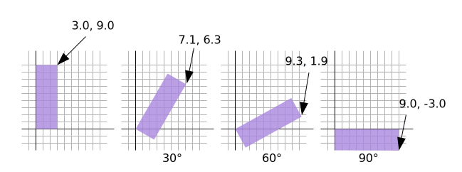

This article is the 2nd in a series of articles that will hopefully teach you about 3D math. Each one builds on the previous lesson so you may find them easiest to understand by reading them in order.
I’m going to admit right up front I have no idea if how I explain this will make sense but what the heck, might as well try.
First I want to introduce you to what’s called a “unit circle”. If you remember your junior high school math (don’t go to sleep on me!) a circle has a radius. The radius of a circle is the distance from the center of the circle to the edge. A unit circle is a circle with a radius of 1.0.
Here’s a unit circle. [1]
Notice as you drag the blue handle around the circle the X and Y positions change. Those represent the position of that point on the circle. At the top Y is 1 and X is 0. On the right X is 1 and Y is 0.
If you remember from basic 3rd grade math if you multiply something by 1 it stays the same. So 123 * 1 = 123. Pretty basic, right? Well, a unit circle, a circle with a radius of 1.0 is also a form of 1. It’s a rotating 1. So you can multiply something by this unit circle and in a way it’s kind of like multiplying by 1 except magic happens and things rotate.
We’re going to take that X and Y value from any point on the unit circle and we’ll multiply our vertex positions by them from our previous example.
Here are the updates to our shader.
struct Uniforms {
color: vec4f,
resolution: vec2f,
translation: vec2f,
+ rotation: vec2f,
};
struct Vertex {
@location(0) position: vec2f,
};
struct VSOutput {
@builtin(position) position: vec4f,
};
@group(0) @binding(0) var<uniform> uni: Uniforms;
@vertex fn vs(vert: Vertex) -> VSOutput {
var vsOut: VSOutput;
+ // Rotate the position
+ let rotatedPosition = vec2f(
+ vert.position.x * uni.rotation.x - vert.position.y * uni.rotation.y,
+ vert.position.x * uni.rotation.y + vert.position.y * uni.rotation.x
+ );
// Add in the translation
- let position = vert.position + uni.translation;
+ let position = rotatedPosition + uni.translation;
// convert the position from pixels to a 0.0 to 1.0 value
let zeroToOne = position / uni.resolution;
// convert from 0 <-> 1 to 0 <-> 2
let zeroToTwo = zeroToOne * 2.0;
// covert from 0 <-> 2 to -1 <-> +1 (clip space)
let flippedClipSpace = zeroToTwo - 1.0;
// flip Y
let clipSpace = flippedClipSpace * vec2f(1, -1);
vsOut.position = vec4f(clipSpace, 0.0, 1.0);
return vsOut;
}
And we update the JavaScript to add space to the new uniform value.
- // color, resolution, translation
- const uniformBufferSize = (4 + 2 + 2) * 4;
+ // color, resolution, translation, rotation, padding
+ const uniformBufferSize = (4 + 2 + 2 + 2) * 4 + 8;
const uniformBuffer = device.createBuffer({
label: 'uniforms',
size: uniformBufferSize,
usage: GPUBufferUsage.UNIFORM | GPUBufferUsage.COPY_DST,
});
const uniformValues = new Float32Array(uniformBufferSize / 4);
// offsets to the various uniform values in float32 indices
const kColorOffset = 0;
const kResolutionOffset = 4;
const kTranslationOffset = 6;
+ const kRotationOffset = 8;
const colorValue = uniformValues.subarray(kColorOffset, kColorOffset + 4);
const resolutionValue = uniformValues.subarray(kResolutionOffset, kResolutionOffset + 2);
const translationValue = uniformValues.subarray(kTranslationOffset, kTranslationOffset + 2);
+ const rotationValue = uniformValues.subarray(kRotationOffset, kRotationOffset + 2);
And we need some kind of UI. This isn’t a tutorial about making UIs so I’m just going to use one. First some HTML to give it a place to be
<body>
<canvas></canvas>
+ <div id="circle"></div>
</body>
Then some CSS to put it somewhere
#circle {
position: fixed;
right: 0;
bottom: 0;
width: 300px;
background-color: var(--bg-color);
}
and finally the JavaScript to use it.
+import UnitCircle from './resources/js/unit-circle.js';
...
const gui = new GUI();
gui.onChange(render);
gui.add(settings.translation, '0', 0, 1000).name('translation.x');
gui.add(settings.translation, '1', 0, 1000).name('translation.y');
+ const unitCircle = new UnitCircle();
+ document.querySelector('#circle').appendChild(unitCircle.domElement);
+ unitCircle.onChange(render);
function render() {
...
// Set the uniform values in our JavaScript side Float32Array
resolutionValue.set([canvas.width, canvas.height]);
translationValue.set(settings.translation);
+ rotationValue.set([unitCircle.x, unitCircle.y]);
// upload the uniform values to the uniform buffer
device.queue.writeBuffer(uniformBuffer, 0, uniformValues);
And here’s the result. Drag the handle on the circle to rotate or the sliders to translate.
Why does it work? Well, look at the math.
rotatedX = a_position.x * u_rotation.x - a_position.y * u_rotation.y; rotatedY = a_position.x * u_rotation.y + a_position.y * u_rotation.x;
Let’s say you have a rectangle and you want to rotate it. Before you start rotating it, the top right corner is at 3.0, -9.0. Let’s pick a point on the unit circle 30 degrees clockwise from 3 o’clock.
The position on the circle there is x = 0.87, y = 0.50
3.0 * 0.87 - -9.0 * 0.50 = 7.1 3.0 * 0.50 + -9.0 * 0.87 = -6.3
That’s exactly where we need it to be
The same for 60 degrees clockwise
The position on the circle there is 0.87 and 0.50
3.0 * 0.50 - -9.0 * 0.87 = 9.3 3.0 * 0.87 + -9.0 * 0.50 = -1.9
You can see that as we rotate that point clockwise, the X value gets bigger and the Y gets smaller. If we kept going past 90 degrees X would start getting smaller again and Y would start getting bigger. That pattern gives us rotation.
There’s another name for the points on a unit circle. They’re called the sine and cosine. So for any given angle we can just look up the sine and cosine like this.
function printSineAndCosineForAnAngle(angleInDegrees) {
const angleInRadians = angleInDegrees * Math.PI / 180;
const s = Math.sin(angleInRadians);
const c = Math.cos(angleInRadians);
console.log('s =', s, 'c =', c);
}
If you copy and paste the code into your JavaScript console and
type printSineAndCosignForAngle(30) you see it prints
s = 0.50 c = 0.87 (note: I rounded off the numbers)
If you put it all together you can rotate your vertex positions to any angle you desire. Just set the rotation to the sine and cosine of the angle you want to rotate to.
... const angleInRadians = angleInDegrees * Math.PI / 180; rotation[0] = Math.cos(angleInRadians); rotation[1] = Math.sin(angleInRadians);
Let’s change things to just have an rotation setting.
+ const degToRad = d => d * Math.PI / 180;
const settings = {
translation: [150, 100],
+ rotation: degToRad(30),
};
const radToDegOptions = { min: -360, max: 360, step: 1, converters: GUI.converters.radToDeg };
const gui = new GUI();
gui.onChange(render);
gui.add(settings.translation, '0', 0, 1000).name('translation.x');
gui.add(settings.translation, '1', 0, 1000).name('translation.y');
+ gui.add(settings, 'rotation', radToDegOptions);
- const unitCircle = new UnitCircle();
- document.querySelector('#circle').appendChild(unitCircle.domElement);
- unitCircle.onChange(render);
function render() {
...
// Set the uniform values in our JavaScript side Float32Array
resolutionValue.set([canvas.width, canvas.height]);
translationValue.set(settings.translation);
- rotationValue.set([unitCircle.x, unitCircle.y]);
+ rotationValue.set([
+ Math.cos(settings.rotation),
+ Math.sin(settings.rotation),
+ ]);
Drag the sliders to translate or rotate.
I hope that made some sense. Next up a simpler one. Scale.
This unit circle has +Y going down to match our pixel space which is also Y down. WebGPU’s normal clip space is +Y up. As we went over in the previous article we’ve flipped Y in the shader. ↩︎